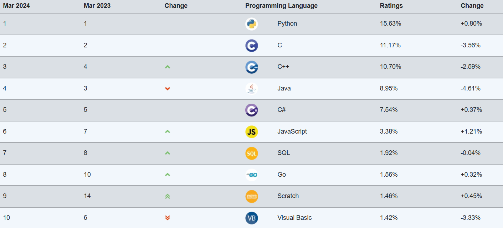

사람이 이해하는 말을 '언어'라고 부르듯이, 컴퓨터가 이해하는 언어를 '프로그래밍 언어'라고 합니다.
프로그래밍 언어란 컴퓨터에서 작동하는 소프트웨어(게임, 프로그램, 파워포인트 등)을 만들기 위한 도구입니다.
프로그래밍 언어를 사용해 소프트웨어를 만드는 사람을 프로그래머라고 부르고, 프로그램을 작성하는 일을 코딩이라 합니다.
잠깐! 프로그래밍과 코딩?
둘 다 같은 작업을 지칭합니다. 프로그래밍은 컴퓨터 명령어로 표현한다는 뜻이라 컴퓨터 쪽에 가까운 표현이고, 코딩은 파이썬 등의 프로그래밍 언어로 코드를 작성한다는 뜻이라 언어 쪽에 가까운 표현입니다.
프로그래밍 언어의 순위!
TIOBE에서는 프로그래밍 언어별 인기도 매달 공개하고 있습니다. 다음은 TIOBE에서 선정한 2024년 3월 기준 상위 20개 프로그래밍 언어입니다.
이 결과는 여러분이 프로그래밍 언어를 선택하는 데 있어 도움이 될 것이라고 생각합니다. 1위에서 5위까지는 파이썬, C, C++, 자바, C# 순입니다.

코딩 초심자를 위한 프로그래밍 언어의 분류
프로그래밍 언어 1위 파이썬의 특징
프로그래밍 언어 2위 C언어의 특징
프로그래밍 언어의 4위 자바의 특징
어떤 것을 만들어 보고 싶나요?
처음 코딩을 시작하시는 분들이 어떤 언어를 배워야할지 많이 고민 하십니다.
사실 어떤 언어보다는 본인이 무엇을 만들고 싶은지 부터 명확히 하는 것이 좋습니다.
웹 개발
PHP, C언어, 자바스크립트, C++, 자바, 파이썬, 루비
게임 개발
C#, C언어, C++, 자바, 파이썬, 루비
모바일 앱 개발
C#, C++, 자바
데이터 분석
R, 파이썬, MATLAB
임벤디드 시스템 프로그래밍
C언어, C++, 파이썬
딥러닝, 인공지능, 데이터 관리
파이썬
추천하는 학습 순서
프로그래밍 언어는 종류가 다양하기 때문에 '어떤 언어를 먼저 공부해야 되지?' 라는 고민을 하시게 됩니다.
여기저기서 검색해보면 '파이썬부터 공부해라.', 'C언어부터 공부해라.' 등등 다양한 이야기가 들려올 것입니다.
정해진 순서는 없습니다. 프로그래밍 언어를 고르기 전에 어떤 목적으로 공부를 할 것인지 먼저 방향성을 정하는 것이 중요합니다.
만들어보고 싶은 소프트웨어가 있다면 해당 플랫폼에 특화된 언어로 시작해도 좋습니다.
전공자라면 C언어를 먼저 배우는 것을 추천합니다
<C언어 - 자바 - 파이썬 - 목표 분야에 필요한 언어 >
C언어는 모든 프로그래밍 언어의 근본이라고 볼 수 있습니다. 다른 언어들이 C언어를 모태로 생겨나 다른 언어를 공부할 때 굉장히 많은 도움이 됩니다.
또한 언어를 해석해주는 컴파일 엔진도 C언어로 구성되어 있는 경우가 많습니다.
하지만 난이도가 높은 편입니다. 하드웨어와 작동하는 방식과 유사하게 작동해서 실행속도가 가장 빠르기도 하며. 프로그래밍의 기본 개념과 기초 원리들을 익히기 좋습니다.
비전공자라면 파이썬으로 프로그래밍을 시작하는 것을 추천합니다.
<파이썬 - C언어 - 자바 - 목표 분야에 필요한 언어>
파이썬은 다른 언어들에 비해 문법이 단순해서 난이도가 낮습니다.
파이썬은 진입장벽이 낮은 프로그래밍 언어이기 때문에 비전공자는 물론 프로그래밍을 처음 시작하는 초보자가 배우기 쉬운 언어입니다.
프로그래밍 언어를 딱 하나 배워야 한다면 자바를 추천합니다.
자바는 현재 웹 애플리케이션 새발에 가장 많이 사용되느 언어입니다. 자바느 우리나라 프로그래밍 언어 활용도에서 가장 높은 점유율을 보입니다.
또한 안드로이드의 애플리케이션이 바로 자바로 이루어져 있어서 모바일 기기용 소프트웨어 개발에도 널리 사용되고 있습니다.